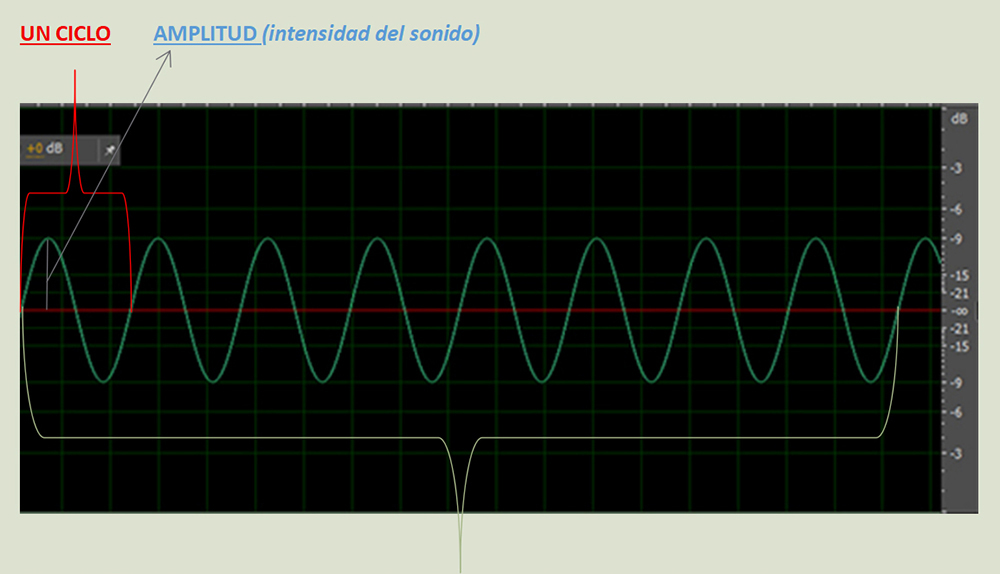
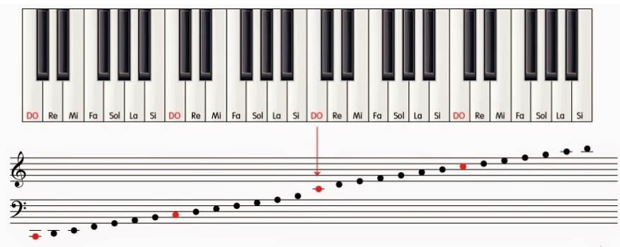
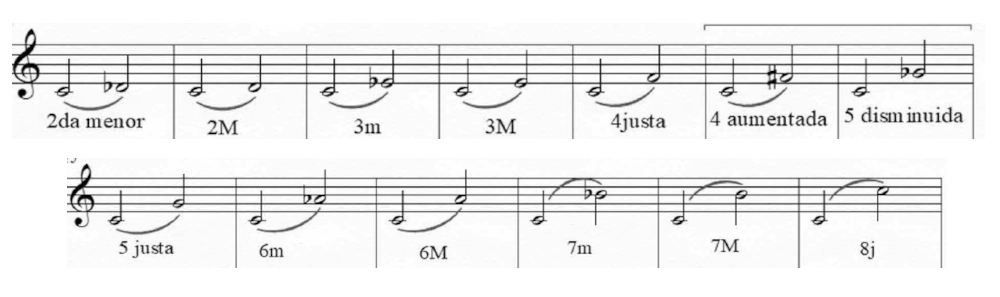
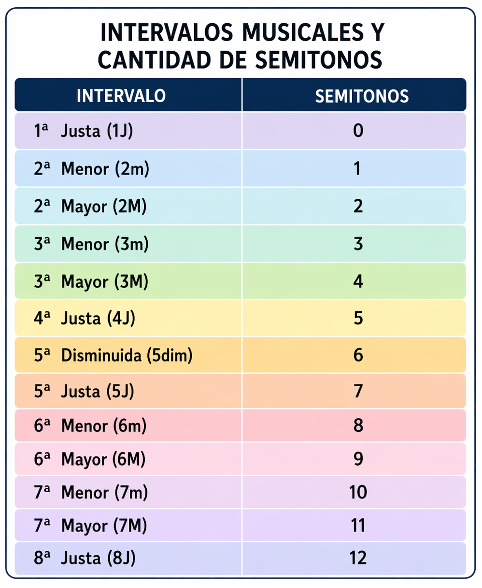
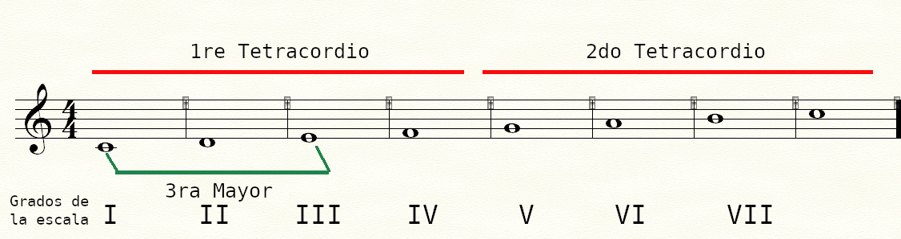
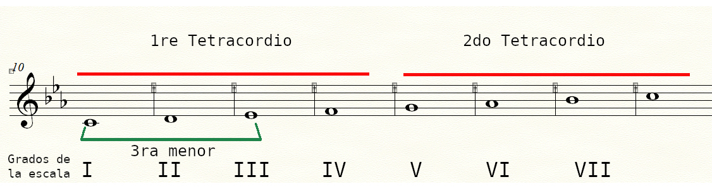

ALTURAS MUSICALES
Introducción acústica (algunos conceptos de la altura)
El sonido
El sonido es una onda mecánica longitudinal que se propaga a través de un medio material (aire, agua, sólidos) mediante variaciones de presión. En el vacío no existe. En el aire seco a 20 °C viaja a aproximadamente 343 m/s.
Frecuencia
La frecuencia (f) es la cantidad de ciclos que completa una onda por segundo, y se mide en hercios (Hz). Es el parámetro físico que determina la altura de un sonido: a mayor frecuencia, más agudo; a menor frecuencia, más grave.
Amplitud
La amplitud es la magnitud del desplazamiento de las partículas del medio respecto a su posición de equilibrio. Determina la intensidad (volumen) del sonido y se expresa habitualmente en decibeles (dB).
Así se representa en un oscilograma

Si todos estos ciclos pasaran en un segundo, serían 8hz (ocho ciclos por segundo), sería un infrasonido.
Rango de audición humano y frecuencias musicales
El oído humano percibe sonidos entre aproximadamente 20 Hz y 20 000 Hz. Por debajo de ese umbral hablamos de infrasonido; por encima, de ultrasonido. La música occidental utiliza una franja bien acotada dentro de ese rango. El piano completo abarca de 27,5 Hz (La₀) a 4 186 Hz (Do₈); la voz humana se mueve principalmente entre 80 Hz y 1 100 Hz.
Un dato clave: cada vez que la frecuencia se duplica percibimos el intervalo de una octava hacia el agudo. La nota de referencia internacional es La₄ = 440 Hz (La₅ = 880 Hz, La₃ = 220 Hz).
NOTACIÓN MUSICAL DE LA ALTURA
El pentagrama
El pentagrama es el sistema de cinco líneas horizontales paralelas y equidistantes sobre el que se escribe la música occidental. Las notas se ubican sobre las líneas o entre ellas (espacios). Cuando una nota queda fuera del pentagrama se usan pequeñas líneas adicionales llamadas líneas auxiliares.
Clave de Sol y clave de Fa
La clave de Sol se coloca al comienzo del pentagrama con su bucle rodeando la segunda línea, que queda fija como Sol₄ (392 Hz). Es la clave estándar para instrumentos y voces agudas: violín, flauta, voz soprano y tenor, mano derecha del piano.
La clave de Fa señala con sus dos puntos la cuarta línea, que queda fija como Fa₃ (175 Hz). Es la clave de los instrumentos y voces graves: bajo, cello, trombón, mano izquierda del piano.
Distribución de alturas en el pentagrama — Clave de Sol
Las notas se alternan entre líneas y espacios en orden ascendente (Do – Re – Mi – Fa – Sol – La – Si) y luego el ciclo se repite una octava más aguda. Cada octava duplica la frecuencia de la anterior.
Las notas se alternan entre líneas y espacios en orden ascendente de Do a Si, para luego repetir el ciclo una octava más aguda (el doble de frecuencia). La clave al comienzo del pentagrama es imprescindible: sin ella las posiciones no tienen altura definida.
Como se ve todo esto representado en clave de sol y fa, y su relacionado con el teclado:

Bemol, becuadro y sostenido en la escritura musical
En la escritura musical, el bemol, el becuadro y el sostenido son signos llamados alteraciones. Sirven para modificar la altura de una nota, es decir, hacer que suene más grave o más aguda.
Sostenido (#)
El sostenido eleva la nota medio tono. Por ejemplo, si una nota es Do, con sostenido pasa a ser Do sostenido (Do#), sonando un poco más aguda.
Bemol (♭)
El bemol baja la nota medio tono. Por ejemplo, si una nota es Si, con bemol pasa a ser Si bemol (Si♭), sonando un poco más grave.
Becuadro (♮)
El becuadro anula el efecto de una alteración anterior, ya sea un sostenido o un bemol, y devuelve la nota a su sonido natural.
Cómo funcionan dentro del compás
Cuando una alteración aparece delante de una nota dentro de un compás, afecta a todas las notas que tengan esa misma altura dentro de ese mismo compás, aunque no se vuelva a escribir el signo.
Al comenzar el siguiente compás, esa alteración deja de tener efecto y la nota vuelve a su altura original, o a la que indique la tonalidad según la armadura de clave.
Armadura de clave
Cuando los sostenidos o bemoles aparecen al comienzo del pentagrama, justo después de la clave, forman la armadura de clave. En ese caso, esas alteraciones afectan a todas las notas de esa misma altura durante toda la obra, o hasta que aparezca un cambio de armadura.
De esta manera, la armadura de clave evita escribir la misma alteración en cada compás y ayuda a identificar la tonalidad de la música.
APP PARA IDENTIFICAR NOTAS EN EL PENTAGRAMA
Identifica la nota en el pentagrama
INTERVALOS DE ALTURAS MUSICALES
Definición
Un intervalo es la distancia entre dos sonidos. Esta distancia puede medirse en términos de altura (grave o agudo) y se expresa mediante el nombre de los grados que separan ambas notas dentro del sistema musical.
Clasificación de los Intervalos
1. Según su forma de ejecución
Intervalos Melódicos:
Son aquellos en los que las notas se escuchan de manera sucesiva, una después de la otra.
Intervalos Armónicos:
Son aquellos en los que las notas se escuchan de manera simultánea, es decir, al mismo tiempo.
2. Según su dirección
Ascendentes:
Cuando la segunda nota es más aguda que la primera.
Descendentes:
Cuando la segunda nota es más grave que la primera.
3. Según su extensión
Intervalos Simples:
Son aquellos que no superan la octava (ejemplo: segunda, tercera, cuarta, etc.).
Intervalos Compuestos:
Son aquellos que superan la octava. Se forman al agregar una o más octavas a un intervalo simple (por ejemplo: novena = segunda + octava).
Resumen
- Melódicos: sucesivos
- Armónicos: simultáneos
- Ascendentes: hacia lo agudo
- Descendentes: hacia lo grave
- Simples: dentro de la octava
- Compuestos: mayores a la octava
Nombre de los Intervalos
¿Cómo se nombran?
Los intervalos se nombran combinando dos elementos:
- Número: indica la cantidad de grados que abarca (segunda, tercera, etc.).
- Calidad: indica su tipo (mayor, menor, justa, aumentada, disminuida).
Ejemplo desde Do (escala cromática)
A partir de la nota Do, podemos observar los distintos intervalos dentro de la escala cromática:
- Do – Do: Unísono justo
- Do – Re♭: Segunda menor
- Do – Re: Segunda mayor
- Do – Mi♭: Tercera menor
- Do – Mi: Tercera mayor
- Do – Fa: Cuarta justa
- Do – Fa♯: Cuarta aumentada
- Do – Sol♭: Quinta disminuida
- Do – Sol: Quinta justa
- Do – La♭: Sexta menor
- Do – La: Sexta mayor
- Do – Si♭: Séptima menor
- Do – Si: Séptima mayor
- Do – Do (octava): Octava justa
El Número y la Calificación de los Intervalos
Número del intervalo
El número indica la distancia entre dos notas dentro del sistema musical (segunda, tercera, cuarta, quinta, etc.).
Tipos de intervalos según su número
Intervalos Justos:
- Unísono
- Cuarta
- Quinta
- Octava
Intervalos Mayores y Menores:
- Segunda
- Tercera
- Sexta
- Séptima
Los intervalos mayores pueden reducirse un semitono para convertirse en menores, y los intervalos justos pueden modificarse para ser aumentados o disminuidos.
Calificación
La calificación indica la cualidad del intervalo.
- Justo
- Mayor
- Menor
- Aumentado
- Disminuido
Los intervalos en el pentagrama partiendo siempre de Do central

Relación de los intervalos con cantidad de semitonos

Práctica de Intervalos
¿Qué intervalo es?
Entrenamiento Auditivo de Intervalos melódicos ascendentes
Opciones de intervalos a escuchar:
ESCALA MAYOR Y MENOR ANTIGUA
Definición de escala
Una escala musical es una sucesión ordenada de sonidos dispuestos de forma ascendente o descendente dentro de un ámbito determinado, generalmente comprendido dentro de una octava. Estos sonidos se organizan según una relación específica de tonos y semitonos, lo que le da a cada escala su carácter sonoro particular. Las escalas sirven como base para la melodía, la armonía y la construcción de acordes dentro de una obra musical.
Escala Mayor
La escala mayor es una escala diatónica de siete sonidos. Su estructura interválica está formada por la siguiente sucesión de tonos (T) y semitonos (S):
T – T – S – T – T – T – S
Por ejemplo, la escala de Do Mayor está formada por: Do – Re – Mi – Fa – Sol – La – Si – Do.

Esta disposición genera un fuerte sentido de reposo en la tónica y una clara atracción de la sensible (el VII grado que en Do Mayor es el Si) hacia ella, siendo la base principal del sistema tonal occidental.
Escala Menor Antigua
La escala menor antigua, también llamada menor natural o modo eólico, es una escala diatónica de siete sonidos que presenta un carácter más melancólico o introspectivo que la escala mayor. Su estructura interválica responde a la siguiente sucesión:
T – S – T – T – S – T – T
Se observa en el primer tetracordio que su primer 3ra es Mayor. Esta es una característica común a todas las escalas Mayores.
Por ejemplo, la escala de Do menor antigua está formada por: Do – Re – Mib – Fa – Sol – Lab – Sib – Do.
Se observa en el primer tetracordio que su primer 3ra es menor. Esta es una característica común a todas las escalas menores.

Se denomina “antigua” porque corresponde a la forma original de la escala menor antes de las modificaciones que dieron origen a la menor armónica y la menor melódica. En esta escala no aparece la sensible.